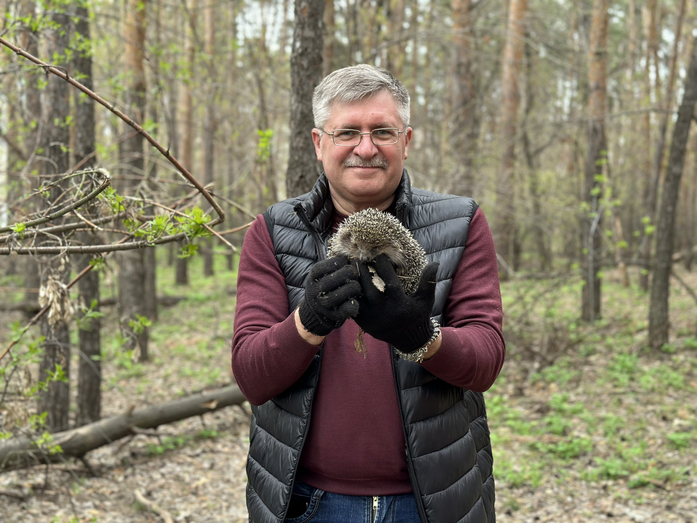

Земский банк принял участие во Всероссийском субботнике.
В рамках экологической акции «Всероссийский субботник» сотрудники сызранских офисов Земского банка приняли участие в экологическом десанте. Инициативная группа сотрудников очищали от мусора территорию парка в районе Храма во имя Святой Троицы, пролегающего от проспекта Королева до ГБОУ Средняя общеобразовательная школа № 10.
«Здание Дополнительного офиса №5 находится в непосредственной близости к этой зеленой зоне. В настоящее время этот прекрасный уголок природы в черте города является одним из любимых мест отдыха горожан. В летнее время здесь можно погулять в зеленой тиши, подышать чистым воздухом в тени хвойных деревьев, а на комфортной детской площадке провести время с детьми. Также сюда часто приезжают жители Сызрани, чтобы просто покормить местных белочек. Поэтому предложение провести уборку территории в этой части нашло живой отклик у сотрудников Земского банка», - отметил Заместитель Председателя Правления банка Алексей Петрович Балмасов.
После наведения чистоты сотрудники банка покормили и сделали фото с обитателями зеленой зоны - белками и ежиком, которых встретили во время уборки.
Общегородской субботник – самое главное мероприятие месячника по наведению чистоты. В этот день, 20 апреля, на улицы вышли работники администраций и предприятий, учащиеся школ, вузов и колледжей, стремясь привести улицы Сызрани в порядок. И традиционно к ним присоединились жители многоквартирных и частных домов.
Ежегодный весенний суббот ник - это добрая традиция, которая объединяет людей, дает им повод сделать доброе и полезное дело, проявить свою заботу о природе, своем родном городе, России в целом.
